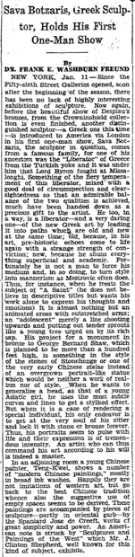

Sava Botzaris, Greek Sculptor, Holds His First One-Man Show
访问原网页 ↗Visit original website ↗

S101 · Frank E. Washburn Freund / Boston Herald · 1930-01-12
作者在谈纽约 Fifty-sixth Street Galleries 时写到邻室展出的滕圭水墨，谈及大片墨色与留白。与画作一起展出的雕塑署西班牙艺术家 José de Creeft。Freund’s New York dispatch describes Teng’s ink washes and his use of empty space at the Fifty-sixth Street Galleries. The sculptures displayed with the paintings are attributed to José de Creeft.
馆藏图像与原文Archived images and documents

原始网址Original URL
https://blogger.googleusercontent.com/img/b/R29vZ2xl/AVvXsEjSdI33TXmYX9ISzAwEvbTdfa-n7_A-Mr_tackoFwhjToQHAMM__ctNb3EbBsrT37L7PCpSlYVeS51Ubmh4xshsVea0Y8AYHnBWoGXmS4W6wis0W0vIhsuqGkonehzJ5pvoStw4qA2f10us/s1600/1930_01_12+Kwei+Teng+Boston+Herald+(MA).jpg